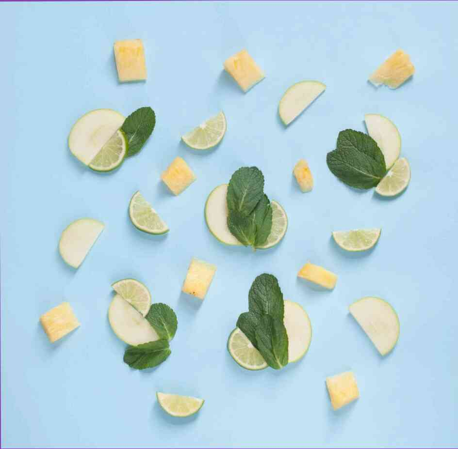

¿Por qué necesita un IV crema?
15.01.2022fotos de el servicio es el caso de la cosmética, no sólo en moda, sino también necesario para la cara. Por alguna razón, casi t...
6 razones para reemplazar la que se ejecute con la...
15.01.2022
Usted puede haber oído hablar de este maravilloso ejercicio, pero ¿sabía usted que en realidad es muy útil? Nuestro cuerpo tiene...
El maquillaje como una estrella. Ekaterina Klimova
15.01.2022 fotos desde el servicio de Ver cómo hacer cambios en la apariencia de 40 años de edad la actriz, en el caso de la reducción, y en...